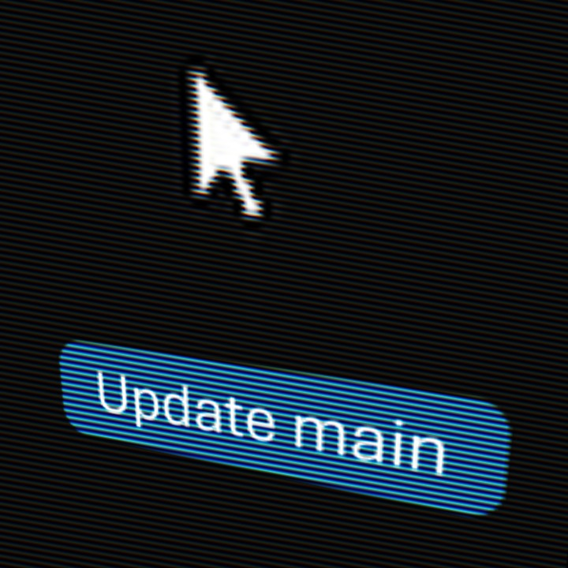
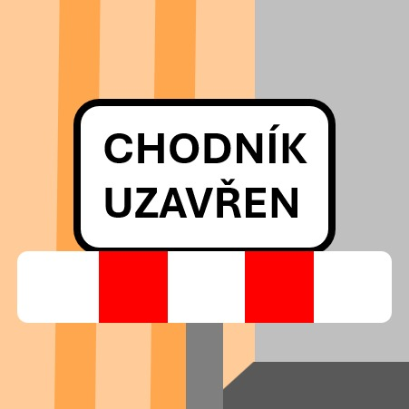

Když inženýři vymění páječky za synťáky.
Jsme hudební odnož studentské iniciativy VLČR. Spojujeme preciznost techniky, pulzující elektronické rytmy a minimalistické vokály. Náš zvuk definují analogové basy, moderní synth melodie a syrová energie nočního města.

NÁŠ NOVÝ SINGL
Update main
Kybernetická fúze programování, elektrotechniky a hutných synťáků. Skladba inspirovaná nekonečnými řádky kódu, kompilací a čistou digitální energií. Propojení světa IT a nekompromisního beatu.
Předchozí tvorba

SINGL
Chodník uzavřen
Hypnotická synth-popová jízda poháněná nekompromisními bicími a mechanickou melodií. Track, který vás nepustí z tanečního parketu ani ze zablokované ulice.
Lyrická dekonstrukce
Jednoduchost v opakování. Čistý rytmus slov.
CHODNÍK UZAVŘEN // CHODNÍK UZAVŘEN
HAJR BI OLIVER // HAJR BI OLIVER
git commit -m "Update main" // git push
SYNTH // MELODIE // BICÍ // PROGRAMOVÁNÍ // VLČR